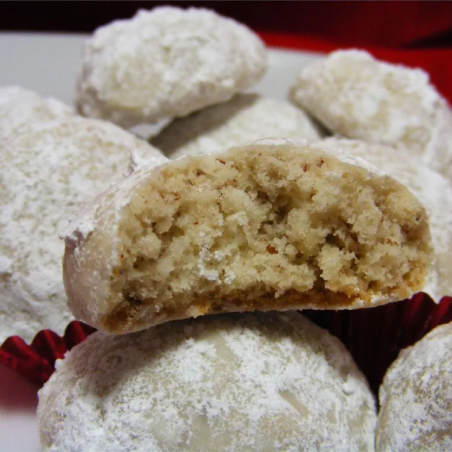

Butterball Cookies

These butterball cookies are rich, buttery, and a real treat for the holidays!
This recipe is amazing to try out for the holidays. It's easy, fast and fantastic with few ingredients.
Don't wait to try theese!
Ingredients
- Sugar: ½ cup white sugar
- Butter: 1 cup butter
- Pecans: 1 cup chopped pecans
- Flour: 2 cups all purpose flour
- Confectioner's sugar: ⅓ cup confectioners' sugar for decoration
Steps
- Gather all ingredients and preheat the oven to 350 degrees F (175 degrees C)
- Beat butter in a large bowl on medium speed for 30 seconds. Add sugar, beat until fluffy. Add flour and beat at low speed until well blended; stir in pecans.
- Shape cookie dough into one inch balls and place on an ungreased cookie sheet. Bake in the preheated oven until edges are lightly browned, about 20 minutes. Transfer cookies onto a wire rack to cool.
- Roll cooled cookies in confectioners' sugar.
- Enjoy!
Home